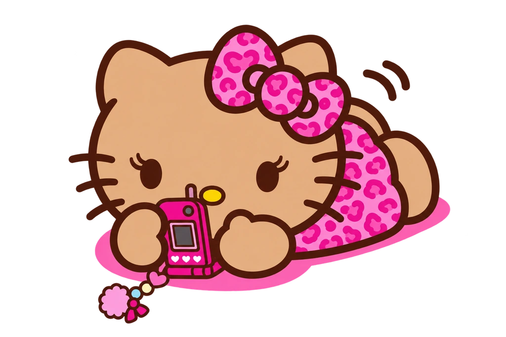

oi, eu sou a sabrina :)
lógica,decisão& glitter.
Sou Product Designer. Gosto daquela parte em que o briefing tem mil abas abertas. Meu trabalho é descobrir o que a pessoa precisa fazer e desenhar um caminho que faça sentido.


mensagem ♥lerabc
gocase.case · o mais recente
selecione um projeto
quatro cases,por dentro.
Cada case tem um vídeo curto com o problema, as decisões e o resultado. Liga o som se quiser ouvir a trilha.
Conheci a internet nos anos 2000. Uma página abria com música, outra tinha um cursor de estrelinha, e cada perfil parecia o quarto de alguém. Antes mesmo de ler, já dava pra sentir que tinha uma pessoa do outro lado.
Foi ali que eu entendi, sem ainda ter nome pra isso, que uma tela também conversa. Essa curiosidade me levou pra Comunicação e Design na UFPE e, depois, pros produtos digitais, que desenho há mais de quatro anos.
A internet ficou mais rápida e mais séria, mas eu continuo atrás daquela sensação: abrir uma tela e perceber, de cara, que alguém pensou em você. É isso que tento colocar em cada fluxo que desenho.
Como eu trabalho
minha playlist de projeto · 4 faixas
Ouvir antes de abrir o Figma
Converso com quem usa o produto e com quem o mantém. Onde a pessoa trava? O que já tentou? As respostas guiam o que vale investigar.
Escolher o que vem primeiro
Cruzo as necessidades das pessoas com as regras do negócio. Com o time, defino qual tarefa precisa ficar mais fácil primeiro.
Dar forma à ideia
Desenho o caminho principal, preparo as telas e monto um protótipo. É aqui que uma conversa sobre “um botão ali” ganha contexto.
Testar e ajustar o volume
Observo alguém tentando concluir a tarefa. Se uma etapa pede explicação demais, volto ao desenho. Depois, acompanho os detalhes com desenvolvimento.


sobre mim
prazer,sabrina.
Moro em São Paulo e há mais de quatro anos desenho produtos digitais. Gosto de acompanhar a ideia inteira, da primeira conversa com quem usa até aquele detalhe que ajusto com desenvolvimento.
Na Toodoo, conduzo workshops com clientes e desenho jornadas para web e mobile. Também trabalho em tempo parcial na Sevn Technologies, onde cuido do design de produtos e da evolução da identidade visual.
Estudei Comunicação e Design na UFPE e hoje curso Web Design na FIAP. O gosto por recortes veio junto nessa mudança de tela.

- product design
- web design
- ux/ui
- discovery
- design system
- white label
contato
boraconversar?
Briefing pronto ou ideia no rascunho? Me conta quem usa o produto e qual parte você quer repensar. A mensagem chega direto no meu WhatsApp.
hoje
oi! pode puxar uma cadeira ♡
me conta: qual produto você quer repensar? pode ser um fluxo, uma tela ou aquela ideia que ainda está nos favoritos.
enviar abre o WhatsApp com a sua mensagem pronta